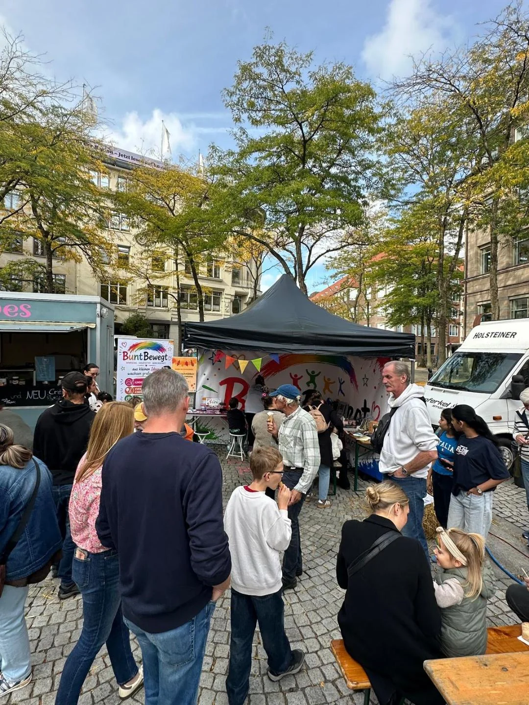
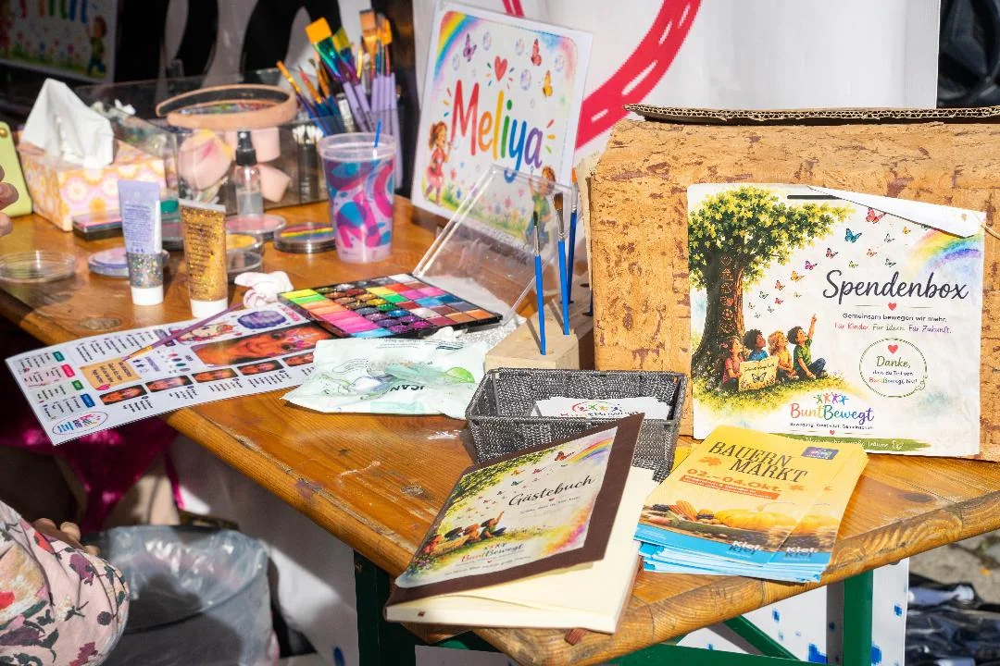

Rückblick · 3. & 4. Oktober 2026
Bunte Gesichter mitten in Kiel
BuntBewegt erobert die Kieler Innenstadt – unsere erste Kooperation mit KielMarketing!
Asmus-Bremer-Platz · Kiel
Zwei Tage, Hunderte bunte Gesichter und ein ganz besonderer Meilenstein für BuntBewegt! Am 3. und 4. Oktober 2026 waren wir beim Kieler Bauern- und Regionalmarkt auf dem Asmus-Bremer-Platz dabei. Zum ersten Mal durften wir im Auftrag von KielMarketing ein Kinderprogramm mitten in der Kieler Innenstadt gestalten.
Der Kieler Bauern- und Regionalmarkt verwandelte die Innenstadt Anfang Oktober in einen Treffpunkt für regionale Produkte, Handwerkskunst und abwechslungsreiche Familienangebote. Mittendrin: BuntBewegt!
Am Samstag und Sonntag waren wir jeweils von 12 bis 16 Uhr auf dem Asmus-Bremer-Platz vertreten und sorgten mit Kinderschminken, Glitzer-Tattoos und Riesenschach für bunte Unterhaltung.
Für unser noch junges Unternehmen war diese Veranstaltung etwas ganz Besonderes. Nur wenige Monate nach unserer Gründung durften wir erstmals mit KielMarketing zusammenarbeiten und Teil des offiziellen Veranstaltungsprogramms werden.
Bereits im Vorfeld wurde BuntBewegt in der offiziellen Pressemitteilung von KielMarketing als Anbieter des Kinderprogramms vorgestellt. Auch in regionalen Veranstaltungshinweisen wurde über unsere Teilnahme berichtet.
Ein großer Schritt für BuntBewegt – und eine tolle Möglichkeit, noch mehr Kieler Familien zu erreichen!
Drei Schminkstationen, Glitzer-Tattoos und jede Menge Kinder!
Anders als bei unseren vorherigen Veranstaltungen stand uns auf dem Asmus-Bremer-Platz diesmal eine kleinere Fläche zur Verfügung.
Deshalb passten wir unser Angebot entsprechend an und bauten drei Kinderschminkstationen und eine Glitzer-Tattoo-Station auf. Zusätzlich sorgte unser Riesenschach für eine spielerische Abwechslung. Die Nachfrage war überwältigend!
An beiden Veranstaltungstagen schminkte unser Team jeweils zwischen 80 und 100 Kinder.
Von bunten Schmetterlingen über wilde Tiger bis hin zu fantasievollen Lieblingsmotiven entstanden an unseren Schminkstationen unzählige kleine Kunstwerke.
Während die Kinder geduldig auf ihre Verwandlung warteten, konnten sie sich am Riesenschach ausprobieren oder das weitere Familienprogramm auf dem Platz entdecken.
Trotz der begrenzten Fläche gelang es unserem Team, die verschiedenen Angebote miteinander zu verbinden und vielen Kindern eine Freude zu bereiten.
Auch optisch gab es beim Bauern- und Regionalmarkt eine Premiere.
Zum ersten Mal präsentierten wir BuntBewegt mit unserem großen Veranstaltungsbanner und einem eigenen Roll-up.
Damit wurde unser Stand nicht nur bunter, sondern auch schon von Weitem als BuntBewegt-Angebot erkennbar. Unser Logo, unsere Farben und die einheitliche Gestaltung sorgten dafür, dass Familien uns leichter finden konnten.
Für uns war es ein schöner Moment, unser wachsendes Unternehmen nun auch mit einer professionellen Veranstaltungspräsentation mitten in der Kieler Innenstadt zu sehen.
Ein Wochenende voller Farbe
Unser Stand, Kinderschminken, Kreativangebote und Riesenschach – ein paar Momente vom Asmus-Bremer-Platz.




„Wir sind extra wegen euch gekommen!“
Das wohl schönste Erlebnis an diesem Wochenende waren die vielen Familien, die uns ganz gezielt besuchten. Einige hatten unser Angebot im offiziellen Veranstaltungsprogramm entdeckt. Andere kannten BuntBewegt bereits von Instagram oder waren durch die Kieler Familienzeitung Kinderkram auf uns aufmerksam geworden.
Wieder andere hatten uns schon bei vergangenen Veranstaltungen erlebt und freuten sich darauf, erneut vorbeizuschauen.
Zum ersten Mal merkten wir besonders deutlich, dass Familien nicht nur zufällig an unserem Stand vorbeikamen, sondern bewusst nach BuntBewegt suchten.
Für ein Unternehmen, das erst im Juni 2026 gegründet wurde, war das eine besondere Entwicklung.
Aus einem kleinen Stand auf der Kieler Woche wurde innerhalb weniger Monate ein Angebot, das immer mehr Familien wiedererkennen und gezielt besuchen.
Genau diese Begegnungen machen unsere Arbeit so besonders!
Gemeinsam mit „Der mit dem grünen Hut“
Auch abseits unserer eigenen Stationen gab es auf dem Asmus-Bremer-Platz einiges zu entdecken.
Mit dabei war Lukas – „Der mit dem grünen Hut“, der mit seinem Mitmachzirkus für Bewegung, Geschicklichkeit und Begeisterung sorgte.
So ergänzten sich unsere kreativen Angebote und das Zirkusprogramm zu einem abwechslungsreichen Erlebnis für Kinder und Familien.
Während bei uns geschminkt, geglitzert und Schach gespielt wurde, konnten die Kinder nebenan verschiedene Zirkuskünste ausprobieren.
Ein schönes Beispiel dafür, wie unterschiedliche Anbieter gemeinsam einen lebendigen Familienbereich gestalten können.
Ein Wochenende, das uns in Erinnerung bleibt
Der Bauern- und Regionalmarkt war für BuntBewegt in vielerlei Hinsicht ein Erfolg.
Unsere erste Kooperation mit KielMarketing, die Erwähnung im offiziellen Veranstaltungsprogramm, unsere neuen Werbematerialien und die vielen gezielten Besuche zeigten uns, wie sehr sich BuntBewegt in den vergangenen Monaten weiterentwickelt hatte.
Besonders stolz sind wir auf unser Team, das an beiden Tagen zahlreiche Kinder geschminkt und mit viel Engagement für einen reibungslosen Ablauf gesorgt hat.
Wir bedanken uns herzlich bei KielMarketing für das entgegengebrachte Vertrauen und die tolle Zusammenarbeit, bei allen Beteiligten auf dem Asmus-Bremer-Platz und natürlich bei den vielen Familien, die uns besucht haben.
Wir freuen uns auf weitere gemeinsame Veranstaltungen in unserer schönen Landeshauptstadt!
BuntBewegt – Bewegung. Kreativität. Gemeinschaft.
Aus kleinen Ideen wachsen große Träume.